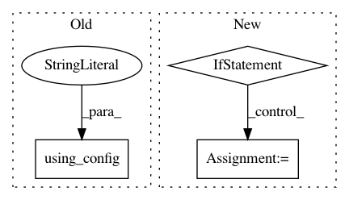

bb400593d5aeccdccf5f827c1e30b0ea10774da7,chainerrl/agents/categorical_double_dqn.py,CategoricalDoubleDQN,_compute_target_values,#CategoricalDoubleDQN#Any#,20
Before Change
batch_rewards = exp_batch["reward"]
batch_terminal = exp_batch["is_state_terminal"]
with chainer.using_config("train", False), state_kept(self.q_function):
next_qout = self.q_function(batch_next_state)
target_next_qout = self.target_q_function(batch_next_state)
After Change
batch_rewards = exp_batch["reward"]
batch_terminal = exp_batch["is_state_terminal"]
if self.recurrent:
target_next_qout, _ = self.target_model.n_step_forward(
batch_next_state, exp_batch["next_recurrent_state"],
output_mode="concat")
next_qout, _ = self.model.n_step_forward(
batch_next_state, exp_batch["next_recurrent_state"],
output_mode="concat")
else:
target_next_qout = self.target_model(batch_next_state)
next_qout = self.model(batch_next_state)
next_q_max = target_next_qout.evaluate_actions(
next_qout.greedy_actions)
batch_size = batch_rewards.shape[0]
In pattern: SUPERPATTERN
Frequency: 3
Non-data size: 3
Instances
Project Name: chainer/chainerrl
Commit Name: bb400593d5aeccdccf5f827c1e30b0ea10774da7
Time: 2019-05-06
Author: muupan@gmail.com
File Name: chainerrl/agents/categorical_double_dqn.py
Class Name: CategoricalDoubleDQN
Method Name: _compute_target_values
Project Name: chainer/chainer
Commit Name: 9cc12aa619dfd814a69777459eff8c3aa8ad776f
Time: 2019-08-04
Author: ecastill@preferred.jp
File Name: tests/chainer_tests/functions_tests/connection_tests/test_deconvolution_nd.py
Class Name: TestDeconvolutionND
Method Name: check_forward_consistency
Project Name: chainer/chainercv
Commit Name: 91ea07fc28e27d33cf14ed458ba6afa42070cb65
Time: 2018-12-05
Author: yuyuniitani@gmail.com
File Name: examples/pspnet/train_multi.py
Class Name:
Method Name: main